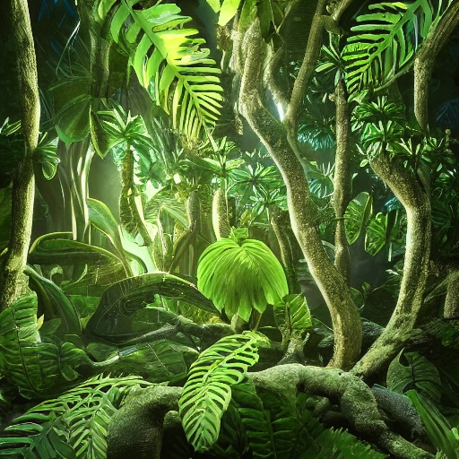

Description: The Lumina Vine is a bioluminescent plant species that grows in tangled masses throughout the jungle canopy. Its elongated leaves emit a soft, ethereal glow during the night. They thrive in the humid, shaded environment of the jungle canopy, often entwining itself around the trunks of towering trees. Each individual vine can live for several Chalupaxian decades, with new shoots continuously sprouting from the main vine.
Planet: chalupax